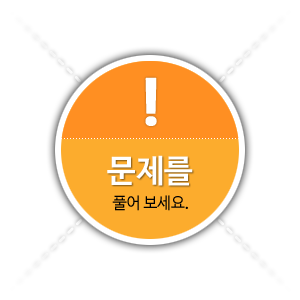

문제는 총 3문제이고
각각 2번의 기회를 제공합니다.
-
- Q1
- 경화된 깊이가 얕은 강의 경화능 측정을 위한 가장 오래된 방법으로 강봉을 담금질하여 부러뜨린 후 파단면을 검사하여 경화깊이를 알리는 표준화된 시험 방법은?
- 불꽃시험사용자 체크 P-F 시험사용자 체크정답 체크 S-A-C시험사용자 체크 셰퍼드(Shepherd) P-V시험사용자 체크
- 정답 확인
-

- 정답 2
- P-F 시험이라고 합니다. P-F 시험은 경화능을 측정할 뿐 아니라 인성도 평가 할 수 있으며 일정온도 구간에서 시험을 하기 때문에 불필요한 결정립 성장과 취약성이 나타나지 않고 만족스러운 경화깊이를 얻을 수 있는 경화온도를 선택할 수 있습니다.


-
- Q2
- 탄소강 중 수축률이 주철의 2배이며 융점이 높고 강도가 큰 특징을 가진 탄소강은?
- 쾌삭강사용자 체크 침탄강사용자 체크 주강사용자 체크정답 체크 고탄소강사용자 체크
- 정답 확인
-
- 정답 3
- 탄소강 중 주강의 경우 주철의 2배인 수축률을 가지고 있고, 융점이 높고 강도가 크며, 유동성이 유동성이 작은 특징을 가지고 있습니다


